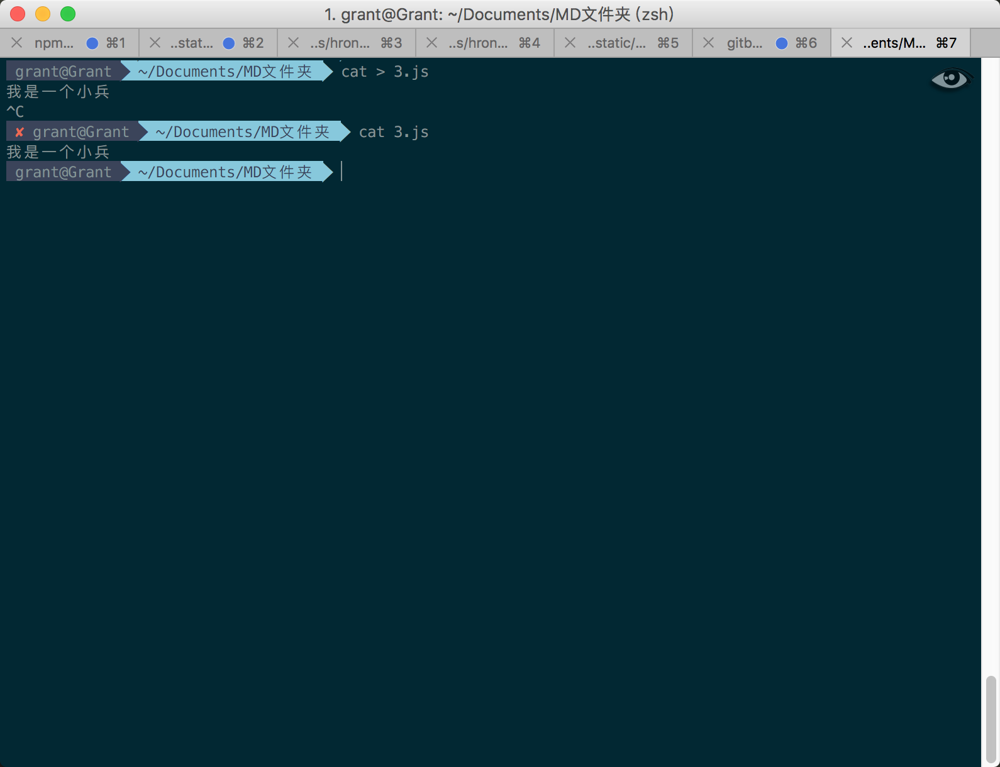

cat命令
cat命令用于连接文件并打印到标准输出设备上。
把1.js文件内容显示到DOS窗口
cat 1.js
cat -n 1.js # 显示行号，对于空白行编号
cat -b 1.js # 显示行号，对于空白行不编号
cat -s 1.js # 对于连续两行以上的空白行，替代为一行空白行
cat -e 1.js # 每行后面加上$显示

把1.js和2.js文件合并成3.js文件，如果已有此文件，则附加到该文件文档末尾
cat 1.js 2.js >> 3.js

把1.js和2.js文件合并成3.js文件，如果已有此文件，则清空文件内容并写入
cat 1.js 2.js > 3.js
新建3.js文件，如果3.js文件存在，则清空3.js文件内容
cat > 3.js # 命令执行结束，进入编辑文件内容状态，如果不想编辑，按Ctrl+C直接退出编辑

向3.js文件追加内容
cat >> 3.js # 命令执行结束，进入编辑文件内容状态，如果不想编辑，按Ctrl+C直接退出编辑

清空2.js文件内容
cat /dev/null > 2.js